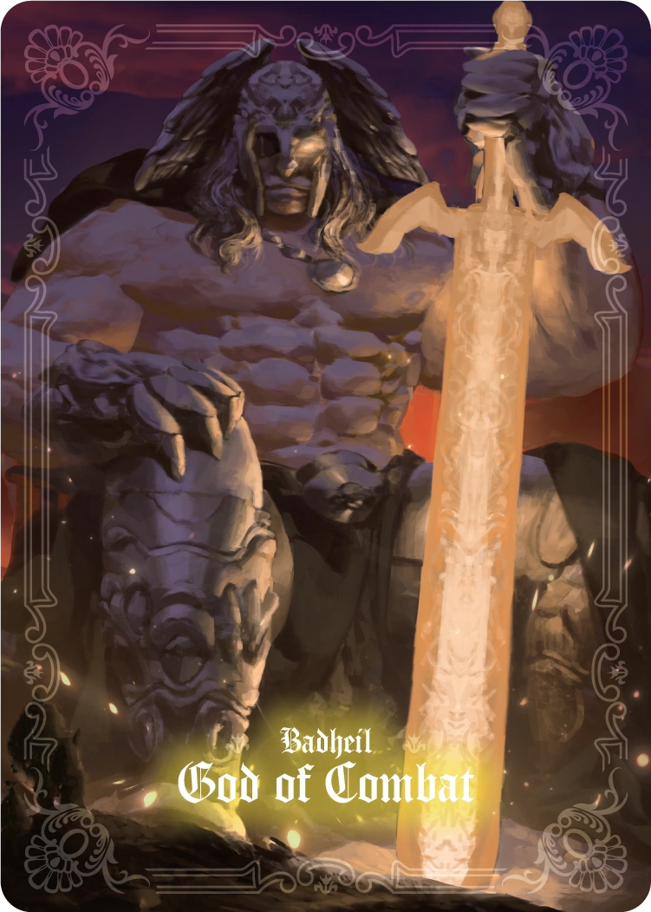

Overview
The God of Combat, is a Sequence 0 God of the Twilight Giant Pathway and the God of the Church of the God of Combat. "He" was a Subsidiary God, the God of Dawn, of the Giant King Aurmir and Aurmir's eldest son with the Goddess of Harvest Omebella. "He" succeeded "His" father Aurmir's God position until death.
Later, at the end of the 1350 World War, Year 1352 of the Fifth Epoch, "He" was killed by the Evernight Goddess and Lilith, who pretended to be Earth Mother Omebella.
Honorific Name
Symbol of Power and Glory; The Great Knight God; Master of War; Patron of Guns; Twilight of All Things (力量与荣耀的象征， 伟大的骑士之神， 战争主宰， 枪炮的庇护者， 万物的黄昏)
Note: The "Master of War" was trying to claim more domains, but war itself belongs to the Red Priest Pathway.3
Sacred Emblem
Sacred Emblem is the symbol of the Gods which worshiped and glorified by people in the Fifth Epoch.
The Sacred Emblem of the God of Combat is the combination of the symbol for dusk and a sword-shaped symbol. This Sacred Emblem is used by "His" Church as its symbol.4
Appearance
In Third Epoch: Sitting on the table side with Tolzna, Salinger, and Omebella, is a giant covered in silver armor. The figure was seven to eight meters tall. "He" was wearing silver full-body armor, and "His" eyes were glowing like the light of dawn. "He" holds a long sword in "His" hand.1Book 1, chapter 1117
- Discovered in the Giant King's Court in the Rose Redemption mural.
In Fourth Epoch: "He" appears as a warrior sitting on a throne high above, holding a sword in front of "Him". "His" face is hidden behind "His" helmet’s visor and "His" entire body is covered with an indescribable sense of decay.5 The tall and royal God of Combat statue.6
- Discovered in the Tudor-Trunsoest Underground Ruins.
In Fifth Epoch: A gigantic mountain-like figure walked out. “His” limbs were abnormally long, and “He” wore tattered silver armor. “His” face was covered by a helmet’s visor, only revealing a blob of orange light. “He” held an exaggerated sword in “His” hand, causing the tip to naturally hang down.7
- During the 1350 World War.
Twisted Version: A giant warrior in tattered armor. "He" held a long sword and was sitting on a throne with bleak dusk as its backdrop.8
- Discovered in the Forsaken Land of the Gods in the True Creator's Temple mural.
History
According to the orthodox churches' legends, the God of Combat appeared in the Third Epoch and helped humanity through the Cataclysm, along with Eternal Blazing Sun, Lord of Storms, God of Knowledge and Wisdom, Evernight Goddess, and Earth Mother.9
Second Epoch
In fact, "He" was the God of Dawn Badheil in the Second Epoch. "He" was the Subsidiary God of the Giant King Aurmir and Aurmir's eldest son with the Goddess of Harvest Omebella. After the fall of the Sanguine Ancestor Lilith, the Demonic Wolf Flegrea, and Mutated King Kvastir, Badheil and "His" mother were sent by Aurmir to cooperate with some secret cult that came out of the human race to deal with Elf King Soniathrym and Queen of Calamity Cohinem.10 Eventually, "His" father fell but managed to pass on "His" power to "Him."11
Third Epoch
Sometime during the early Third Epoch, "He" completed the apotheosis ritual and became Sequence 0 of the Twilight Giant Pathway.12 Afterwards, as the God of Combat Badheil, "He" joined Rose Redemption as a member of the Subsidiary Gods faction under the Evernight Goddess, which eventually caused Ancient Sun God's death. This assassination battle became known as the Cataclysm.1
Fourth Epoch
In the Fourth Epoch, all deities have "Their" own countries in poorer places and acknowledged the first Solomon Empire and Black Emperor Solomon's domination over the Northern Continent in order to fight against the opposing factions. At this time, the God of Combat had a rivalry conflict with the Evernight Goddess and Death due to "Their" Eternal Darkness group adjacent pathways.13 Later, "He" reached a common agreement with the other 5 Orthodox Gods, which led to the fall of Solomon and the Solomon Empire. Afterward, the 6 Orthodox Gods supported the Tudor-Trunsoest United Empire that ruled the Northern Continent. "They" used the rise of the United Empire to establish the Six Orthodox Churches, with the God of Combat establishing the Church of the God of Combat.
When the Black Emperor was about to resurrect, the 6 Gods helped Trunsoest ascend to Justiciar, becoming the Night Emperor and established the Trunsoest Empire. As a consequence, Blood Emperor Alista Tudor forcefully swapped from the Black Emperor Pathway to the Red Priest Pathway to become a half-mad Red Priest, leading to the War of the Four Emperors.
Later on, in the Pale Era, when Death went mad and caused havoc on the Northern Continent with Primordial Demoness,14 the now 7 Orthodox Gods (including the God of Craftsmanship) joined forces and caused the destruction of Death and a fatal blow to the Primordial Demoness.15 At the end of the Fourth Epoch, the 7 Gods fractured and supported different Angel families of the Trunsoest Empire to form their own country.16 The God of Combat supported the Einhorn Family to create the Feysac Kingdom, later-to-be Feysac Empire.
When the Astral Barrier around the Earth cracked at the end of the Fourth Epoch, "He" and the other Orthodox Gods moved "Their" divine kingdoms into the Astral World to mend the cracks.17
Fifth Epoch
In the Fifth Epoch, "His" believers mainly concentrate in the Feysac Empire, where the headquarters of the Church of the God of Combat is located and the only religion in Feysac.
All 7 Orthodox Deities wanted to have a Black Emperor, but "They" were not unanimous in "Their" candidate. As such, when George III managed to obtain the opportunity to become one through his preparations by the year 1350, the 7 Deities had no choice but to give "Their" tacit agreement.18 However, eventually George III's Apotheosis Ritual failed and he died on the spot.
Divine War's Conclusion
In response to Evernight Goddess's acquisition of the the Uniqueness of Death in the summer of 1350, the God of Combat initiated the 1350 World War by having Feysac invade Loen. "He" wanted to shake "Her" anchors before engaging in a battle of Gods.19 Near the end of the war in 1352, "He" confronted the Evernight Goddess in Backlund with the Earth Mother.
Li—li—th?
God of Combat, Book 1, chapter 1266
However, the Earth Mother, who turned out to be Lilith in disguise, inserted a wooden staff on "His" heart from the back and drained "Him" of "His" life, before the Evernight Goddess finished "Him" off. When "He" died, some of "His" body parts scattered as sunset lights landed on the battlefield and caused countless soldiers to die; some crushed the mountains and created a lake that made all living creatures age; some fused with some creatures and turned them into crazy and powerful monsters, and some enveloped the Great Twilight Hall outside St. Millom. "His" death marked the end of the 1350 World War.2Book 1, chapter 1266 The Evernight Goddess successfully obtained from "Him" the the Uniqueness of Twilight Giant, the Twilight Sword.
The Twilight That Lingers
Larrion, the former Chief Shepherd of the Church of the God of Combat, believed that the God of Combat will return and resurrect in "His" body.20
The Rise of Warrior Beyonders
The death of the God of Combat had caused many Beyonder monsters and abnormalities related to the Twilight Giant Pathway to appear in the past five to six years.2 This also makes it easier for Beyonders of the Twilight Giant Pathway to find materials (potion formulas and characteristics) and advance, especially for the mid-to-low Sequences.21 22 23 The Pride Armor is one of the artifact born from "His" lost Beyonder characteristics.24 "His" partially collapsed divine kingdom also allowed many mystical items and Beyonder Characteristics, including those of neighboring pathways, to fall from the Astral World into reality, onto the earth and into the ocean.25
Trivia
- Because of "His" intense aversion and hatred before "His" demise, the God of Combat's scattered Beyonder characteristics after "His" death, like the Pride Armor, are hostile to related things of the Darkness and Mother Pathways.26
Translations
| Language | Name |
|---|---|
| English | God of Combat God of Dawn Badheil |
| Chinese | 战神 晨曦之神 巴德海尔 |
| Thai | เทพสงคราม เทพแห่งรุ่งอรุณ บัลด์ไฮเออร์ |
References
- Book 1, chapter 1117.
- Book 1, chapter 1266.
- Archive:Cuttlefish's WeChat Post: "Chained Pathway Potion Formulas", Question 3.
- Church of the God of Combat Weibo Post, 2021-01-05.
- Book 1, chapter 261.
- Book 1, chapter 587.
- Book 1, chapter 1265.
- Book 1, chapter 455.
- Book 1, chapter 18.
- Book 1, chapter 1066.
- Book 2, chapter 900.
- Book 1, chapter 1261.
- Book 1, chapter 1065.
- Book 1, chapter 217.
- Book 1, chapter 588.
- Book 1, chapter 469.
- Book 1, chapter 1271.
- Book 1, chapter 1087.
- Book 1, chapter 1269.
- Book 1, chapter 1287.
- Book 2, chapter 77.
- Book 2, chapter 82.
- Book 2, chapter 806.
- Book 2, chapter 500.
- Book 2, chapter 1066.
- Book 2, chapter 495.
Source
Article adapted from the God of Combat article on the Lord of the Mysteries Fandom wiki (CC BY-SA). Chapter numbers follow that article's citation format.
Image gallery
